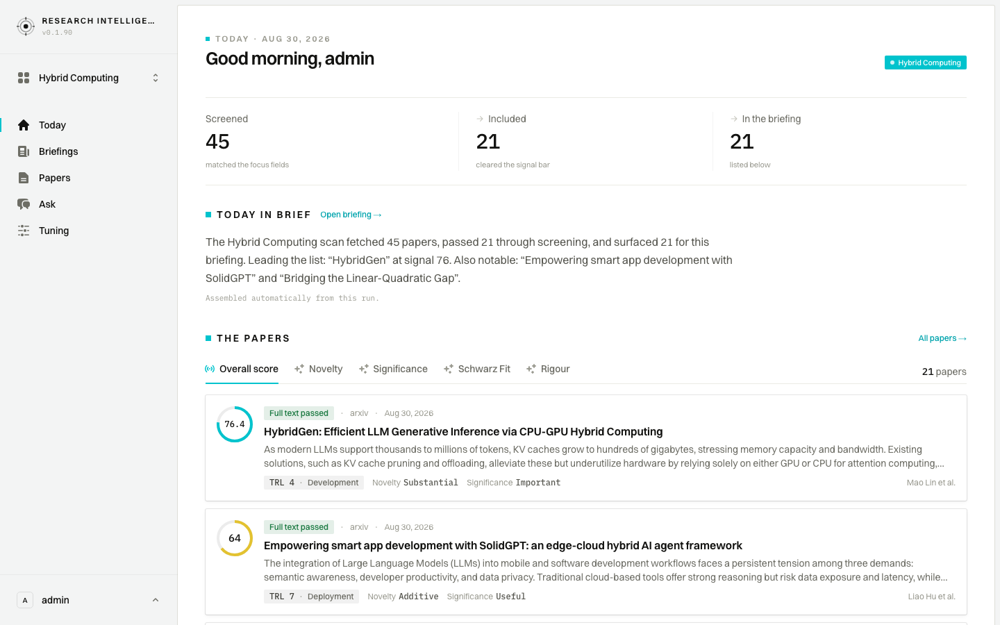

User journeys
How three kinds of reader move through Research Intelligence, one screen at a time: what each person sees, does and decides. Real data from the Hybrid Computing workspace; stills at every step and short clips where the interaction matters.

Two minutes before the first meeting
Today’s brief, then the briefing itself, then a glance at the paper that ranked highest and why.

Ten-minute triage
The corpus with passed papers first, then search, screening filters and sorting, the screening log, and a second look at one paper.

A protected hour with one paper
The scorecard, what the score is made of, the evidence behind each dimension, and a conversation with the full text.
Captured 2 September 2026 against the production snapshot of 1 September 2026. Desktop, English. The domain expert journey’s final step was captured on the live system. How these were captured, and the verification record, are kept alongside.